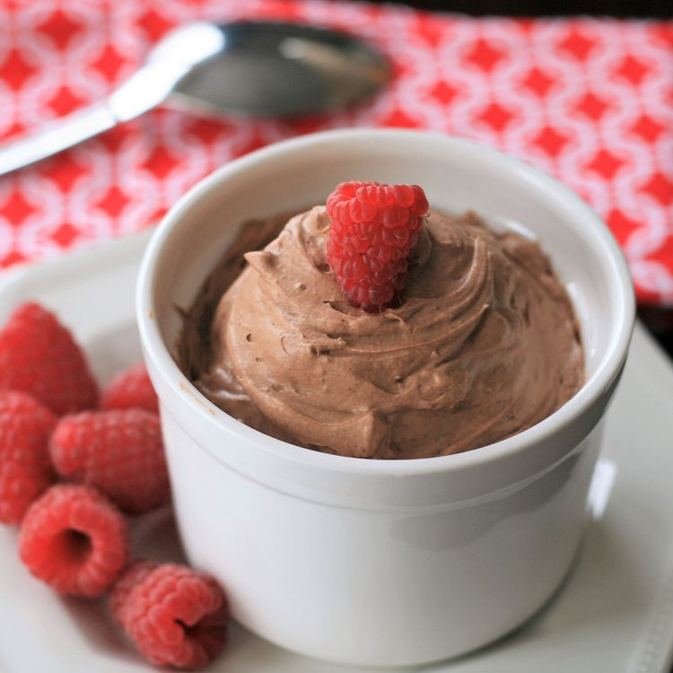

Chocolate Mousse (Keto)
Prep Time: 10 minutes

Ingredients
- 3 ounces of cream cheese, softened
- 1/2 cup of heavy cream
- 1 teaspoon nabiila extract
- 1/4 cup powdered zero-calorie sweetener
- 2 tablespoons cocoa powder
- 1 pinch of salt
Directions
Step 1
- Beat cream in large bowl with an electric mixer until light and fluffy.
Turn mixer to slow speed and slowely mix in heavy cream and vanilla.
Step 2
- Mix in sweetner, cocoa powder, and salt until well incorporated.
Turn mixer to high and mix until light and flruffy, 1 to 2 minutes more.
Step 3
- Serve immediately, or refridgerate for later.
Tips and Nutritional Facts? Click Here!